«Покупаем Калужское»
26 июля в магазине «Магнит» ЗАО «Тандер», в рамках проводимого смотра-конкурса «Покупаем Калужское», состоялась выставка–дегустация продукции калужских товаропроизводителей.
Смотр–конкурс проводится с целью расширения ассортимента и увеличения объемов реализации местной продукции на территории области. Свою продукцию в «Магните» представили более 10 калужских производителей. Вне конкурса была представлена продукция тарусских предпринимателей. Полуфабрикаты ООО «Верзилин» имели большой успех у посетителей дегустации.
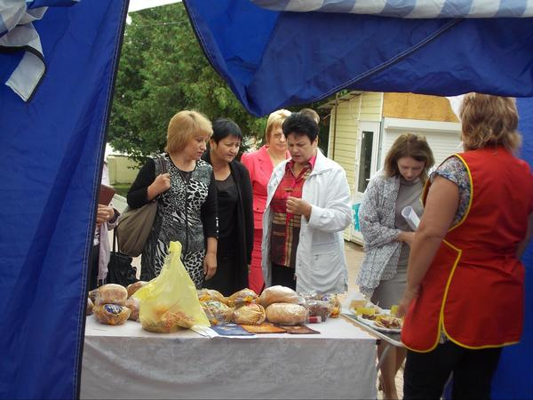


Таруса отметила 767 день рождения
В течение четырех дней, с 11 по 14 июля 2013 года в Тарусе прошли праздничные мероприятия, посвященные 767-летию нашего любимого города. Программа празднования Дня города Тарусы была очень обширной.
Центральными событиями стали открытие новой городской котельной, визит Митрополита Калужского и Боровского Климента, а также торжественное мероприятие в Киноконцертном зале.
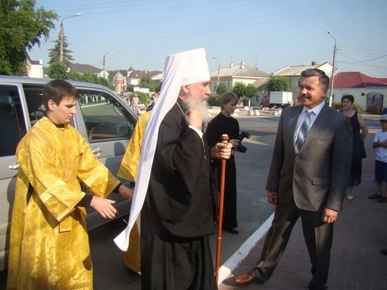

Субботний день 13 июля был насыщен культурными и развлекательными мероприятиями. Целый день, сменяя друг друга, выступали со своими концертными программами артисты.
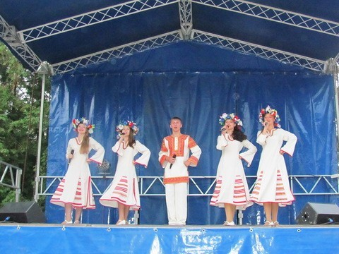

В этом году впервые на площади города прошел «Детский парад на колесах», в нем приняли участие 16 семей с детьми. Парад получился очень ярким и красочным.
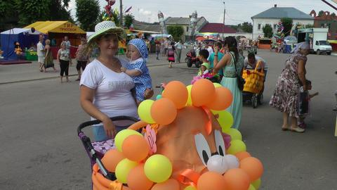
 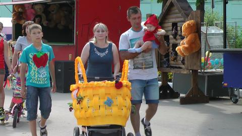
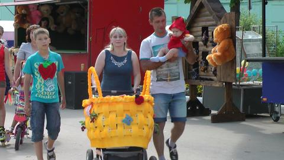

В городском сквере состоялась демонстрация коллекции одежды дизайнера Натальи Меглицкой под названием «Париж».
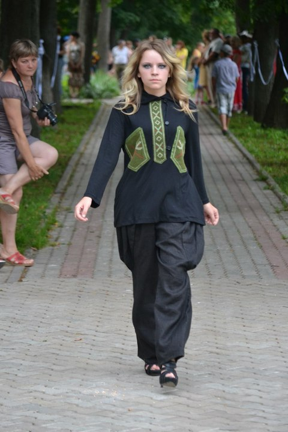
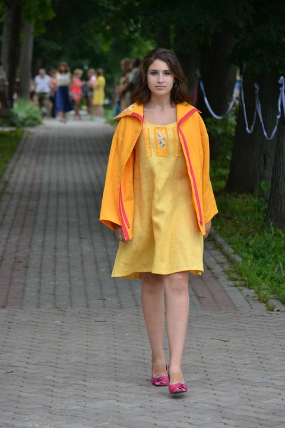
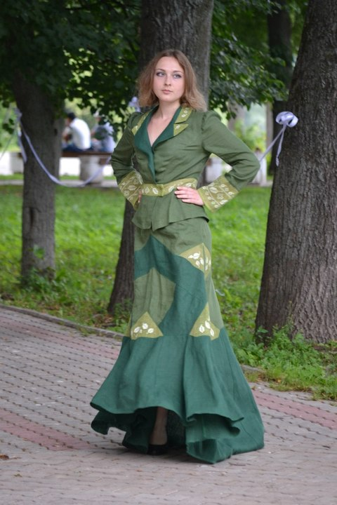

В эти дни в музеях города открылись новые выставки, а в киноконцертном зале прошла презентация сборника стихов Бориса Шипилова «Ах, Таруса, наряд твой зеленый…» В Картинной галерее состоялось открытие персональной выставки Члена Союза Художников РФ Николая Гурина (г. Таруса).
 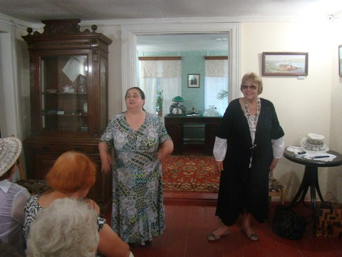
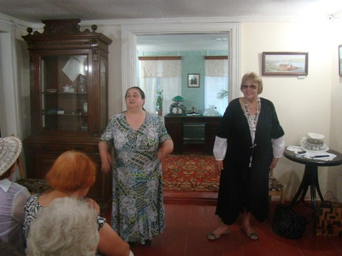
Финалом этих праздничных мероприятий стал концерт продюсерского центра Сергея Осадчего из г. Калуги и красочный фейерверк под восторженные взгляды и аплодисменты тарусян и гостей города.
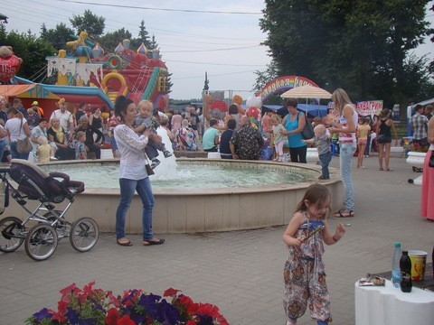

Фото: Е. Жарова, Г. Плущевская, А. Шиловская
Открытие нового магазина
11 июля 2013 года, в преддверии Дня города, для тарусян открыл свои двери новый продуктовый магазин эконом–класса «Пятерочка».

 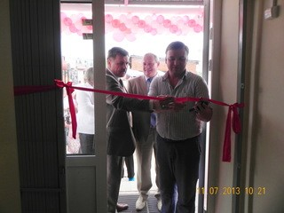
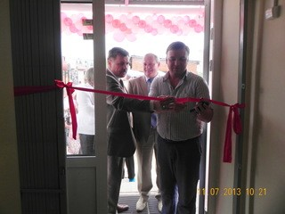

На торжественном открытии магазина присутствовали: министр конкурентной политики и тарифов Калужской области Н.В. Владимиров, исполняющий обязанности главы администрации МР «Тарусский район» Е.М. Мальцев, представители администрации ГП «Город Таруса». Их встречали супервайзер Кондрашов С.В. и директор магазина Н.Ю. Свистунова, а также многочисленные покупатели. По традиции гости и руководство магазина перерезали красную ленточку и пожелали коллективу нового магазина удачи, эффективной работы и своего покупателя. Для любого магазина самое важное – это покупатель, который его любит и ему доверяет.
Магазин ориентирован на широкие слои населения. Здесь установлены минимальные цены на самые востребованные товары. Кроме того, ежедневно, с 10:00 часов до 14:00 часов, пенсионерам предоставляется скидка 10 % на весь приобретенный товар.
Открытие новой газовой котельной в Тарусе
11 июля 2013 года, в канун празднования Дня города, в торжественной обстановке в Тарусе открыли новую газовую котельную, тем самым ознаменовав завершение реализации серьезного и дорогостоящего проекта по её строительству. Котельная построена по самым современным технологиям и соответствует нормам в области стандартизации и пожарной безопасности. При ее строительстве были применены высококачественные материалы, установлено новейшее оборудование.
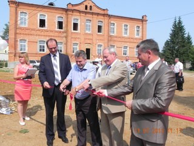
 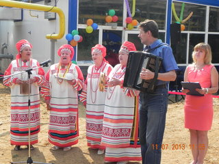
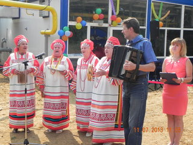


{kind=link}
{kind=link}
{kind=link}
{kind=link}
{kind=link}
{kind=link}
{kind=link}
{kind=link}
{kind=link}
{kind=link}
{kind=link}
{kind=link}
{kind=link}